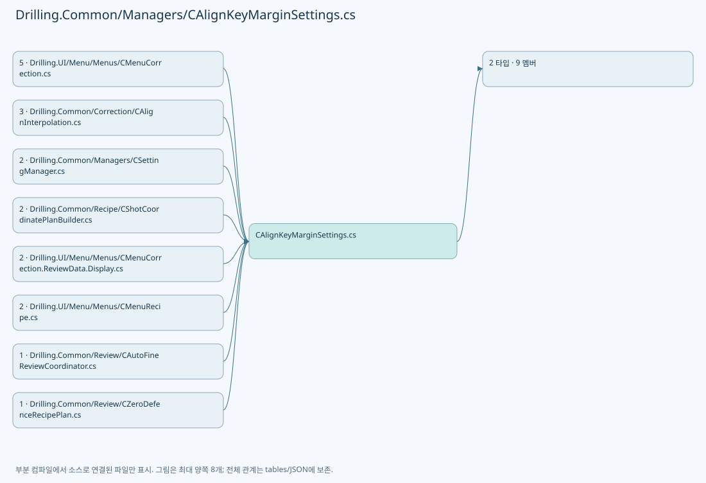

Markdown 원문 · Git 원본
Drilling.Common/Managers/CAlignKeyMarginSettings.cs
| 항목 | 내용 |
|---|
| 원본 저장소 | https://github.com/kjuws10-rgb/A3Drilling.git |
| 원본 Commit | 0219666f9053b907d96d7e0aa7d0c6c1be3a73d4 |
| 원본 SHA256 | 1d5a5568cadfa7d9c22efe92232696811c540a7535f971bc50cdeb845f216f37 |
| 파일 분류 | code |
| 원본 크기/행 | 2,098 bytes / 53 physical lines |
| 인코딩 | utf-8-sig |
| 검토 범위 | 구문/부분 의미 분석에서 추출한 사실. 동작·물리 단위·실장비 합격을 보증하지 않습니다. |
| 원본 링크 | 고정 Commit 원본 |
파일의 역할과 읽는 순서
프로그램의 시작·구성·공유 타입 또는 빌드 연결에 사용됩니다. 아래 실제 선언·참조와 원본 근거를 확인합니다.

네임스페이스·타입·상속
| 타입 | 구분 | 원본 범위 | 선언/상속 |
|---|
| ST_ALIGN_KEY_MARGINS | RecordStructDeclaration | 6–6 | ST_ALIGN_KEY_MARGINS |
| CAlignKeyMarginSettings | ClassDeclaration | 8–52 | CAlignKeyMarginSettings |
멤버 빠른 목록
| 이름 | 종류 | 범위 | 서명 |
|---|
| MarginXKey | FieldDeclaration | L10–10 | string Drilling.Common.Managers.CAlignKeyMarginSettings.MarginXKey |
| MarginYKey | FieldDeclaration | L11–11 | string Drilling.Common.Managers.CAlignKeyMarginSettings.MarginYKey |
| DefaultMarginX | FieldDeclaration | L12–12 | double Drilling.Common.Managers.CAlignKeyMarginSettings.DefaultMarginX |
| DefaultMarginY | FieldDeclaration | L13–13 | double Drilling.Common.Managers.CAlignKeyMarginSettings.DefaultMarginY |
| Read | MethodDeclaration | L15–19 | Drilling.Common.Managers.ST_ALIGN_KEY_MARGINS Drilling.Common.Managers.CAlignKeyMarginSettings.Read(System.Collections.Generic.IReadOnlyList<Drilling.Common.Managers.ST_SYSTEM_PARAMETER>) |
| Read | MethodDeclaration | L21–25 | Drilling.Common.Managers.ST_ALIGN_KEY_MARGINS Drilling.Common.Managers.CAlignKeyMarginSettings.Read(System.Collections.Generic.IReadOnlyDictionary<string, string>) |
| Read | MethodDeclaration | L27–33 | double Drilling.Common.Managers.CAlignKeyMarginSettings.Read(System.Collections.Generic.IReadOnlyList<Drilling.Common.Managers.ST_SYSTEM_PARAMETER>, string) |
| Read | MethodDeclaration | L35–39 | double Drilling.Common.Managers.CAlignKeyMarginSettings.Read(System.Collections.Generic.IReadOnlyDictionary<string, string>, string) |
| Parse | MethodDeclaration | L41–51 | double Drilling.Common.Managers.CAlignKeyMarginSettings.Parse(string?, string) |
멤버별 상세 계약·호출·처리 해설
FieldDeclaration MarginXKey · L10–10
Drilling.Common/Managers/CAlignKeyMarginSettings.cs:10–10
| 항목 | 실제 추출 값 |
|---|
| 서명 | string Drilling.Common.Managers.CAlignKeyMarginSettings.MarginXKey |
| 접근/수식자 | Public / public, const |
| 반환/값 타입 | string |
| 소속 타입 | NamedType:Drilling.Common.Managers.CAlignKeyMarginSettings |
현재 부분 분석에서 직접 연결된 호출자는 없습니다. XAML/이벤트/인터페이스·델리게이트·외부 진입을 추가 확인해야 하며, 미사용으로 판정한 것이 아닙니다.
본문의 실제 연산·분기·예외·반환 순서(원문 위치 순):
| 원본 행 | 종류 | 주석 해설 |
|---|
| 10 | variable-initializer | 변수의 초기값을 지정합니다: MarginXKey = "AK_MARGIN_X" |
변경 전 점검: 입력/반환 타입, 위 호출자, 예외/취소 경로, 공유 상태와 저장·전송 소비자를 함께 확인합니다. 값의 단위나 물리 방향을 이름만으로 확정하지 않습니다.
FieldDeclaration MarginYKey · L11–11
Drilling.Common/Managers/CAlignKeyMarginSettings.cs:11–11
| 항목 | 실제 추출 값 |
|---|
| 서명 | string Drilling.Common.Managers.CAlignKeyMarginSettings.MarginYKey |
| 접근/수식자 | Public / public, const |
| 반환/값 타입 | string |
| 소속 타입 | NamedType:Drilling.Common.Managers.CAlignKeyMarginSettings |
현재 부분 분석에서 직접 연결된 호출자는 없습니다. XAML/이벤트/인터페이스·델리게이트·외부 진입을 추가 확인해야 하며, 미사용으로 판정한 것이 아닙니다.
본문의 실제 연산·분기·예외·반환 순서(원문 위치 순):
| 원본 행 | 종류 | 주석 해설 |
|---|
| 11 | variable-initializer | 변수의 초기값을 지정합니다: MarginYKey = "AK_MARGIN_Y" |
변경 전 점검: 입력/반환 타입, 위 호출자, 예외/취소 경로, 공유 상태와 저장·전송 소비자를 함께 확인합니다. 값의 단위나 물리 방향을 이름만으로 확정하지 않습니다.
FieldDeclaration DefaultMarginX · L12–12
Drilling.Common/Managers/CAlignKeyMarginSettings.cs:12–12
| 항목 | 실제 추출 값 |
|---|
| 서명 | double Drilling.Common.Managers.CAlignKeyMarginSettings.DefaultMarginX |
| 접근/수식자 | Public / public, const |
| 반환/값 타입 | double |
| 소속 타입 | NamedType:Drilling.Common.Managers.CAlignKeyMarginSettings |
현재 부분 분석에서 직접 연결된 호출자는 없습니다. XAML/이벤트/인터페이스·델리게이트·외부 진입을 추가 확인해야 하며, 미사용으로 판정한 것이 아닙니다.
본문의 실제 연산·분기·예외·반환 순서(원문 위치 순):
| 원본 행 | 종류 | 주석 해설 |
|---|
| 12 | variable-initializer | 변수의 초기값을 지정합니다: DefaultMarginX = 15.5 |
변경 전 점검: 입력/반환 타입, 위 호출자, 예외/취소 경로, 공유 상태와 저장·전송 소비자를 함께 확인합니다. 값의 단위나 물리 방향을 이름만으로 확정하지 않습니다.
FieldDeclaration DefaultMarginY · L13–13
Drilling.Common/Managers/CAlignKeyMarginSettings.cs:13–13
| 항목 | 실제 추출 값 |
|---|
| 서명 | double Drilling.Common.Managers.CAlignKeyMarginSettings.DefaultMarginY |
| 접근/수식자 | Public / public, const |
| 반환/값 타입 | double |
| 소속 타입 | NamedType:Drilling.Common.Managers.CAlignKeyMarginSettings |
현재 부분 분석에서 직접 연결된 호출자는 없습니다. XAML/이벤트/인터페이스·델리게이트·외부 진입을 추가 확인해야 하며, 미사용으로 판정한 것이 아닙니다.
본문의 실제 연산·분기·예외·반환 순서(원문 위치 순):
| 원본 행 | 종류 | 주석 해설 |
|---|
| 13 | variable-initializer | 변수의 초기값을 지정합니다: DefaultMarginY = 15.5 |
변경 전 점검: 입력/반환 타입, 위 호출자, 예외/취소 경로, 공유 상태와 저장·전송 소비자를 함께 확인합니다. 값의 단위나 물리 방향을 이름만으로 확정하지 않습니다.
MethodDeclaration Read · L15–19
Drilling.Common/Managers/CAlignKeyMarginSettings.cs:15–19
| 항목 | 실제 추출 값 |
|---|
| 서명 | Drilling.Common.Managers.ST_ALIGN_KEY_MARGINS Drilling.Common.Managers.CAlignKeyMarginSettings.Read(System.Collections.Generic.IReadOnlyList<Drilling.Common.Managers.ST_SYSTEM_PARAMETER>) |
| 접근/수식자 | Public / public, static |
| 반환/값 타입 | Drilling.Common.Managers.ST_ALIGN_KEY_MARGINS |
| 소속 타입 | NamedType:Drilling.Common.Managers.CAlignKeyMarginSettings |
입력 계약:
| 이름 | 타입 | 전달 | 선택/기본값 |
|---|
| settings | System.Collections.Generic.IReadOnlyList<Drilling.Common.Managers.ST_SYSTEM_PARAMETER> | None | False / |
정적 호출자로 확인된 위치:
호출하는 대상과 해석 범위:
| 원본 행 | 표현식 | 분석 상태 | 대상/소스 위치 |
|---|
| 17 | ArgumentNullException.ThrowIfNull | resolved | void System.ArgumentNullException.ThrowIfNull(object?, string?) |
| 18 | new | resolved | Drilling.Common.Managers.ST_ALIGN_KEY_MARGINS.ST_ALIGN_KEY_MARGINS(double, double) · Drilling.Common/Managers/CAlignKeyMarginSettings.cs:6 |
| 18 | Read | resolved | double Drilling.Common.Managers.CAlignKeyMarginSettings.Read(System.Collections.Generic.IReadOnlyList<Drilling.Common.Managers.ST_SYSTEM_PARAMETER>, string) · Drilling.Common/Managers/CAlignKeyMarginSettings.cs:27 |
| 18 | Read | resolved | double Drilling.Common.Managers.CAlignKeyMarginSettings.Read(System.Collections.Generic.IReadOnlyList<Drilling.Common.Managers.ST_SYSTEM_PARAMETER>, string) · Drilling.Common/Managers/CAlignKeyMarginSettings.cs:27 |
본문의 실제 연산·분기·예외·반환 순서(원문 위치 순):
| 원본 행 | 종류 | 주석 해설 |
|---|
| 17 | call | 함수·델리게이트 또는 객체 생성자를 호출합니다: ArgumentNullException.ThrowIfNull(settings) |
| 18 | call | 함수·델리게이트 또는 객체 생성자를 호출합니다: new(Read(settings, MarginXKey), Read(settings, MarginYKey)) |
| 18 | call | 함수·델리게이트 또는 객체 생성자를 호출합니다: Read(settings, MarginXKey) |
| 18 | call | 함수·델리게이트 또는 객체 생성자를 호출합니다: Read(settings, MarginYKey) |
| 18 | return | 호출자에게 값 또는 제어를 반환합니다: return new(Read(settings, MarginXKey), Read(settings, MarginYKey)); |
변경 전 점검: 입력/반환 타입, 위 호출자, 예외/취소 경로, 공유 상태와 저장·전송 소비자를 함께 확인합니다. 값의 단위나 물리 방향을 이름만으로 확정하지 않습니다.
MethodDeclaration Read · L21–25
Drilling.Common/Managers/CAlignKeyMarginSettings.cs:21–25
| 항목 | 실제 추출 값 |
|---|
| 서명 | Drilling.Common.Managers.ST_ALIGN_KEY_MARGINS Drilling.Common.Managers.CAlignKeyMarginSettings.Read(System.Collections.Generic.IReadOnlyDictionary<string, string>) |
| 접근/수식자 | Public / public, static |
| 반환/값 타입 | Drilling.Common.Managers.ST_ALIGN_KEY_MARGINS |
| 소속 타입 | NamedType:Drilling.Common.Managers.CAlignKeyMarginSettings |
입력 계약:
| 이름 | 타입 | 전달 | 선택/기본값 |
|---|
| settings | System.Collections.Generic.IReadOnlyDictionary<string, string> | None | False / |
정적 호출자로 확인된 위치:
호출하는 대상과 해석 범위:
| 원본 행 | 표현식 | 분석 상태 | 대상/소스 위치 |
|---|
| 23 | ArgumentNullException.ThrowIfNull | resolved | void System.ArgumentNullException.ThrowIfNull(object?, string?) |
| 24 | new | resolved | Drilling.Common.Managers.ST_ALIGN_KEY_MARGINS.ST_ALIGN_KEY_MARGINS(double, double) · Drilling.Common/Managers/CAlignKeyMarginSettings.cs:6 |
| 24 | Read | resolved | double Drilling.Common.Managers.CAlignKeyMarginSettings.Read(System.Collections.Generic.IReadOnlyDictionary<string, string>, string) · Drilling.Common/Managers/CAlignKeyMarginSettings.cs:35 |
| 24 | Read | resolved | double Drilling.Common.Managers.CAlignKeyMarginSettings.Read(System.Collections.Generic.IReadOnlyDictionary<string, string>, string) · Drilling.Common/Managers/CAlignKeyMarginSettings.cs:35 |
본문의 실제 연산·분기·예외·반환 순서(원문 위치 순):
| 원본 행 | 종류 | 주석 해설 |
|---|
| 23 | call | 함수·델리게이트 또는 객체 생성자를 호출합니다: ArgumentNullException.ThrowIfNull(settings) |
| 24 | call | 함수·델리게이트 또는 객체 생성자를 호출합니다: new(Read(settings, MarginXKey), Read(settings, MarginYKey)) |
| 24 | call | 함수·델리게이트 또는 객체 생성자를 호출합니다: Read(settings, MarginXKey) |
| 24 | call | 함수·델리게이트 또는 객체 생성자를 호출합니다: Read(settings, MarginYKey) |
| 24 | return | 호출자에게 값 또는 제어를 반환합니다: return new(Read(settings, MarginXKey), Read(settings, MarginYKey)); |
변경 전 점검: 입력/반환 타입, 위 호출자, 예외/취소 경로, 공유 상태와 저장·전송 소비자를 함께 확인합니다. 값의 단위나 물리 방향을 이름만으로 확정하지 않습니다.
MethodDeclaration Read · L27–33
Drilling.Common/Managers/CAlignKeyMarginSettings.cs:27–33
| 항목 | 실제 추출 값 |
|---|
| 서명 | double Drilling.Common.Managers.CAlignKeyMarginSettings.Read(System.Collections.Generic.IReadOnlyList<Drilling.Common.Managers.ST_SYSTEM_PARAMETER>, string) |
| 접근/수식자 | Private / private, static |
| 반환/값 타입 | double |
| 소속 타입 | NamedType:Drilling.Common.Managers.CAlignKeyMarginSettings |
입력 계약:
| 이름 | 타입 | 전달 | 선택/기본값 |
|---|
| settings | System.Collections.Generic.IReadOnlyList<Drilling.Common.Managers.ST_SYSTEM_PARAMETER> | None | False / |
| key | string | None | False / |
정적 호출자로 확인된 위치:
호출하는 대상과 해석 범위:
| 원본 행 | 표현식 | 분석 상태 | 대상/소스 위치 |
|---|
| 29 | settings.FirstOrDefault | resolved | Drilling.Common.Managers.ST_SYSTEM_PARAMETER? System.Collections.Generic.IEnumerable<Drilling.Common.Managers.ST_SYSTEM_PARAMETER>.FirstOrDefault<Drilling.Common.Managers.ST_SYSTEM_PARAMETER>(System.Func<Drilling.Common.Managers.ST_SYSTEM_PARAMETER, bool>) |
| 30 | item.Key.Equals | resolved | bool string.Equals(string?, System.StringComparison) |
| 31 | item.Name.Equals | resolved | bool string.Equals(string?, System.StringComparison) |
| 32 | Parse | resolved | double Drilling.Common.Managers.CAlignKeyMarginSettings.Parse(string?, string) · Drilling.Common/Managers/CAlignKeyMarginSettings.cs:41 |
본문의 실제 연산·분기·예외·반환 순서(원문 위치 순):
| 원본 행 | 종류 | 주석 해설 |
|---|
| 29 | call | 함수·델리게이트 또는 객체 생성자를 호출합니다: settings.FirstOrDefault(item => item.Key.Equals(key, StringComparison.OrdinalIgnoreCase) || item.Name.Equals(key, StringComparison.OrdinalIgnoreCase)) |
| 29 | local-declaration | 지역 변수를 선언합니다: var parameter = settings.FirstOrDefault(item => item.Key.Equals(key, StringComparison.OrdinalIgnoreCase) || item.Name.Equals(key, StringComparison.OrdinalIgnoreCase)); |
| 29 | variable-initializer | 변수의 초기값을 지정합니다: parameter = settings.FirstOrDefault(item => item.Key.Equals(key, StringComparison.OrdinalIgnoreCase) || item.Name.Equals(key, StringComparison.OrdinalIgnoreCase)) |
| 30 | call | 함수·델리게이트 또는 객체 생성자를 호출합니다: item.Key.Equals(key, StringComparison.OrdinalIgnoreCase) |
| 31 | call | 함수·델리게이트 또는 객체 생성자를 호출합니다: item.Name.Equals(key, StringComparison.OrdinalIgnoreCase) |
| 32 | call | 함수·델리게이트 또는 객체 생성자를 호출합니다: Parse(parameter?.Value, key) |
| 32 | return | 호출자에게 값 또는 제어를 반환합니다: return Parse(parameter?.Value, key); |
변경 전 점검: 입력/반환 타입, 위 호출자, 예외/취소 경로, 공유 상태와 저장·전송 소비자를 함께 확인합니다. 값의 단위나 물리 방향을 이름만으로 확정하지 않습니다.
MethodDeclaration Read · L35–39
Drilling.Common/Managers/CAlignKeyMarginSettings.cs:35–39
| 항목 | 실제 추출 값 |
|---|
| 서명 | double Drilling.Common.Managers.CAlignKeyMarginSettings.Read(System.Collections.Generic.IReadOnlyDictionary<string, string>, string) |
| 접근/수식자 | Private / private, static |
| 반환/값 타입 | double |
| 소속 타입 | NamedType:Drilling.Common.Managers.CAlignKeyMarginSettings |
입력 계약:
| 이름 | 타입 | 전달 | 선택/기본값 |
|---|
| settings | System.Collections.Generic.IReadOnlyDictionary<string, string> | None | False / |
| key | string | None | False / |
정적 호출자로 확인된 위치:
호출하는 대상과 해석 범위:
| 원본 행 | 표현식 | 분석 상태 | 대상/소스 위치 |
|---|
| 37 | settings.FirstOrDefault | resolved | System.Collections.Generic.KeyValuePair<string, string> System.Collections.Generic.IEnumerable<System.Collections.Generic.KeyValuePair<string, string>>.FirstOrDefault<System.Collections.Generic.KeyValuePair<string, string>>(System.Func<System.Collections.Generic.KeyValuePair<string, string>, bool>) |
| 37 | item.Key.Equals | resolved | bool string.Equals(string?, System.StringComparison) |
| 38 | Parse | resolved | double Drilling.Common.Managers.CAlignKeyMarginSettings.Parse(string?, string) · Drilling.Common/Managers/CAlignKeyMarginSettings.cs:41 |
본문의 실제 연산·분기·예외·반환 순서(원문 위치 순):
| 원본 행 | 종류 | 주석 해설 |
|---|
| 37 | call | 함수·델리게이트 또는 객체 생성자를 호출합니다: settings.FirstOrDefault(item => item.Key.Equals(key, StringComparison.OrdinalIgnoreCase)) |
| 37 | call | 함수·델리게이트 또는 객체 생성자를 호출합니다: item.Key.Equals(key, StringComparison.OrdinalIgnoreCase) |
| 37 | local-declaration | 지역 변수를 선언합니다: var pair = settings.FirstOrDefault(item => item.Key.Equals(key, StringComparison.OrdinalIgnoreCase)); |
| 37 | variable-initializer | 변수의 초기값을 지정합니다: pair = settings.FirstOrDefault(item => item.Key.Equals(key, StringComparison.OrdinalIgnoreCase)) |
| 38 | call | 함수·델리게이트 또는 객체 생성자를 호출합니다: Parse(pair.Value, key) |
| 38 | return | 호출자에게 값 또는 제어를 반환합니다: return Parse(pair.Value, key); |
변경 전 점검: 입력/반환 타입, 위 호출자, 예외/취소 경로, 공유 상태와 저장·전송 소비자를 함께 확인합니다. 값의 단위나 물리 방향을 이름만으로 확정하지 않습니다.
MethodDeclaration Parse · L41–51
Drilling.Common/Managers/CAlignKeyMarginSettings.cs:41–51
| 항목 | 실제 추출 값 |
|---|
| 서명 | double Drilling.Common.Managers.CAlignKeyMarginSettings.Parse(string?, string) |
| 접근/수식자 | Private / private, static |
| 반환/값 타입 | double |
| 소속 타입 | NamedType:Drilling.Common.Managers.CAlignKeyMarginSettings |
입력 계약:
| 이름 | 타입 | 전달 | 선택/기본값 |
|---|
| text | string? | None | False / |
| key | string | None | False / |
정적 호출자로 확인된 위치:
호출하는 대상과 해석 범위:
| 원본 행 | 표현식 | 분석 상태 | 대상/소스 위치 |
|---|
| 43 | double.TryParse | resolved | bool double.TryParse(string?, System.Globalization.NumberStyles, System.IFormatProvider?, out double) |
| 44 | double.IsFinite | resolved | bool double.IsFinite(double) |
| 47 | new InvalidDataException | resolved | System.IO.InvalidDataException.InvalidDataException(string?) |
본문의 실제 연산·분기·예외·반환 순서(원문 위치 순):
| 원본 행 | 종류 | 주석 해설 |
|---|
| 43 | call | 함수·델리게이트 또는 객체 생성자를 호출합니다: double.TryParse(text, NumberStyles.Float, CultureInfo.InvariantCulture, out var value) |
| 43 | if | 조건에 따라 분기합니다: if (!double.TryParse(text, NumberStyles.Float, CultureInfo.InvariantCulture, out var value) || !double.IsFinite(value) || value < 0) |
| 44 | call | 함수·델리게이트 또는 객체 생성자를 호출합니다: double.IsFinite(value) |
| 47 | call | 함수·델리게이트 또는 객체 생성자를 호출합니다: new InvalidDataException($"Setting > Common > ALIGN의 {key}는 0 이상의 유한한 mm 값이어야 합니다.") |
| 47 | throw | 예외를 발생/전달합니다: throw new InvalidDataException($"Setting > Common > ALIGN의 {key}는 0 이상의 유한한 mm 값이어야 합니다."); |
| 50 | return | 호출자에게 값 또는 제어를 반환합니다: return value; |
제어 구문의 포함 구조(실제 실행 순서/CFG가 아닌 구문 탐색 그림):
flowchart TD
M["Parse"]
N0["L43 if"]
M -->|포함| N0
변경 전 점검: 입력/반환 타입, 위 호출자, 예외/취소 경로, 공유 상태와 저장·전송 소비자를 함께 확인합니다. 값의 단위나 물리 방향을 이름만으로 확정하지 않습니다.
구문·바인딩 한계
전체 WPF/벤더 SDK/프로젝트별 빌드 조건을 로드한 정식 빌드가 아닙니다. resolved는 이 부분 컴파일에서의 심볼 연결이며 virtual/interface/delegate/이벤트/Reflection/XAML의 실제 런타임 구현을 확정하지 않습니다. candidate와 unresolved는 후속 확인 대상으로 남깁니다.
원문 전체 주석 해설본
원본 모든 행과 행별 해설 보기
원본을 빠뜨리거나 임의로 줄이지 않았습니다. L000001 | 표시는 원본 행 번호, // 해설은 별도 설명입니다. 실행용 소스가 아닌 문서입니다.
수정·재검증 체크
• 원본 Commit과 현재 작업 파일 SHA가 같은지 먼저 확인합니다. 다르면 이 문서를 과거 버전 자료로 취급합니다.
• 선언·직접 호출·이벤트/인터페이스 경계·설정 소비를 함께 확인합니다. 정적 연결의 빈 곳을 정상 경로로 추정하지 않습니다.
• 저장 형식/단위/식별자·재시도·취소·예외·롤백에 영향을 주는 변경은 상세 해설장과 호출자를 다시 검토합니다.
• 도구의 구문 추출과 별도 정적 추적 해설, 실제 빌드·시뮬레이션·실장비 검증 결과를 분리합니다.